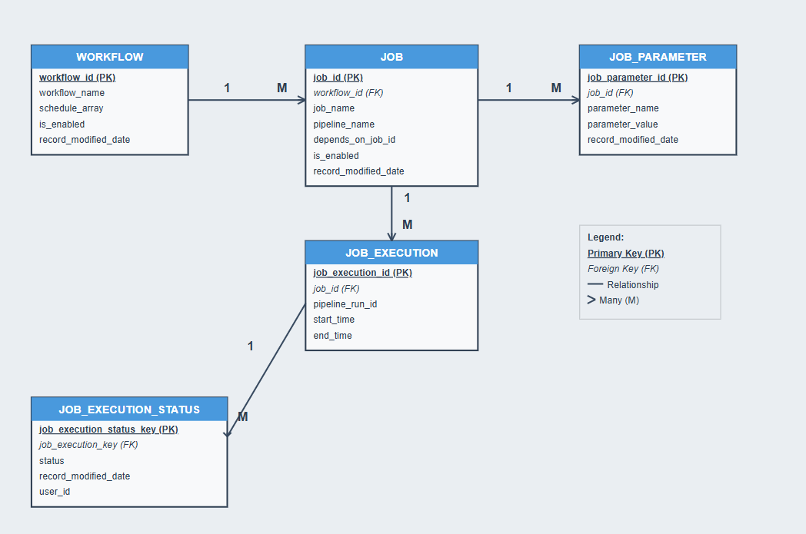

At WTW, I led the end-to-end redesign and implementation of a metadata-driven ETL framework, replacing a legacy system. The new system is robust, flexible, and still actively used across the organization. It supports any data source compatible with Azure Databricks and Azure Data Factory (ADF) and emphasizes modularity, reuse, and observability.
Field names have been modified for confidentiality while preserving core business logic.
